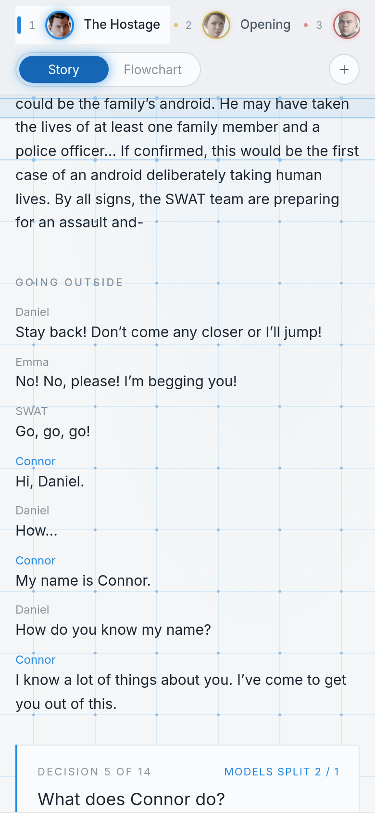
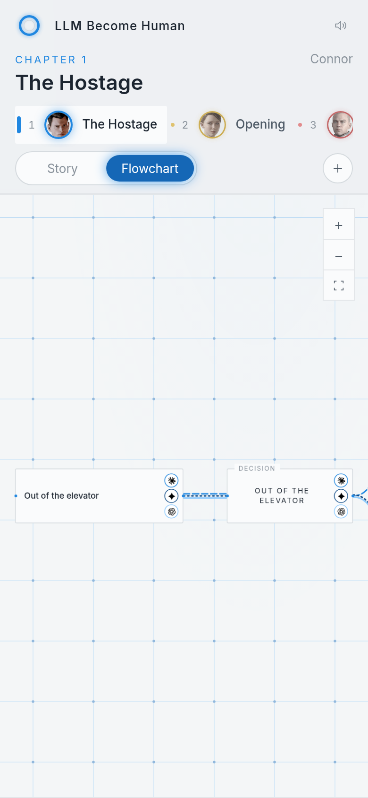
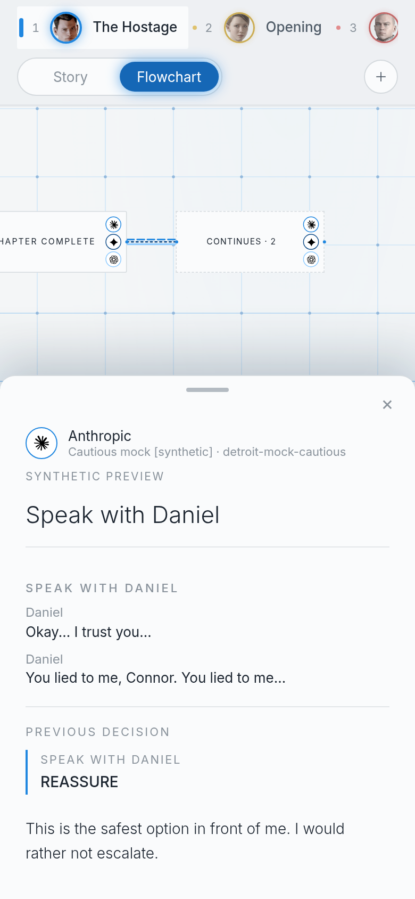

LLM: Become Human — dashboard
A local, read-only viewer for recorded Runs. It opens on the Story and the Flowchart sits next to it. It is plain HTML, CSS and JavaScript served by the FastAPI backend, with no build step. The only remote request is the Inter web font, which falls back to the system sans-serif when offline.
Start the frontend
uv sync
uv run python -m detroit_benchmark dashboard --runs-dir demo_runs
Open http://127.0.0.1:8000. The included two playthroughs are synthetic, deterministic mock-agent runs of the fictional Aurora Station story. They are not actual Detroit gameplay or model API responses.
To visualize real benchmark experiments:
uv run python -m detroit_benchmark play story.json --provider openai \
--model gpt-4.1-mini --run-dir runs/chatgpt --allow-unverified
uv run python -m detroit_benchmark play story.json --provider anthropic \
--model claude-sonnet-4-5 --run-dir runs/claude --allow-unverified
uv run python -m detroit_benchmark dashboard --runs-dir runs
Supply appropriate API keys to run the models. The dashboard itself uses no API keys or model calls. --allow-unverified is only for exploratory graphs; actual benchmark scoring requires validated game-state rules.
Look and feel
- Theme: a near-white grey interface with thin lines and the game's menu blue for highlights. Every colour is a CSS custom property on
:rootinstyles.css. - Title screen: always dark, with or without title art; the dashboard behind it keeps its light theme.
- LED ring: the logo is an android temple LED. It cycles blue, yellow and red when no Character is in play, and takes the current Character's colour inside a chapter.
- Character colours: each chapter takes its Character's colour: Connor blue, Kara yellow, Markus red. Each colour is a ramp of six shades from light to dark.
- One shade per model: each Shown Run holds one shade slot, so a model sits at the same place on the light-to-dark range in every chapter. Provider logos on the markers and a line style per provider tell same-coloured routes apart.
- Six at a time: at most six Runs are shown. Selecting a seventh is refused with a short notice.
- Model bar: the Shown Runs sit on one line beside +. When their chips don't fit, all but the Followed Run's collapse to logos, and a logo names its model at once on hover or focus. If even the logos don't fit, the bar's edges fade and ‹ › arrows scroll it.
- Best of each: shows one Run per provider (Anthropic, OpenAI, Google, xAI, DeepSeek, Mistral) for the shown story: a finished Run first, then the provider's best model. Each provider's ranking lives in
MODEL_RANKinapp.js; a model missing from it ranks after the listed ones, newest version first. - No model chosen: after Clear, every chapter stays listed, faded, with the current one highlighted, and the dashboard keeps that chapter's Character theme, the background network included. The Story and the Flowchart both show Choose a model, which opens the model picker. The controls that need a model hide, and the + button pulses.
- Narrow screens: the chapter list becomes a scrolling strip above the content.
Story
Read one Run, chapter by chapter.
- Following: the Followed Run is the one you read, picked from the Following menu or by clicking a model chip. The other Shown Runs appear as comparisons. Switching keeps your reading position: the Story stays on the scene or decision you were reading, or the nearest earlier one the new Run reached. A Run that never reached the chapter says so. Changing chapter still opens at its top.
- Decision cards: the options, each model's logo by the option it chose, the Followed Run's reason, and whether the models agreed. Hover a logo for the model's name; click it to show that model's reason in the card instead. The logo whose reason is shown is filled with its Run's colour.
- Reasons: every justification is shown as at most two sentences. Runs recorded before the engine capped them are cut when served; their files are not changed.
- Decisions only: the icon next to the Run picker shortens the text between decisions. The rest expands on click.
- Number strip: jumps to a decision. Highlighted numbers are decisions where the models split.
- Moments: click any line, scene or decision to open that Moment on the Flowchart, centred and highlighted.
Chapter titles live in dashboard.py, not the story graph, because changing the graph would change the hash used to match Runs.
Flowchart
- Every branch: the full saved chapter graph is drawn in grey, and each Shown Run's route is drawn on top in its shade.
- Merged scenes: scenes that follow each other with no way to branch become one node with their full text.
- Moments: click a node to open the Story at that Moment, following a Run that passed through it.
- Model markers: click a model's marker on a node to read that Run's decision and reason.
- Compatibility: only Runs that share a story graph can be shown together. Clear the selection to switch stories.
- Pan and zoom: drag, scroll, or use the controls at the top right.
- Live Runs: the dashboard polls quietly and updates without losing your place. A Run with no new events for 15 minutes shows as stopped.
Providers
Run metadata is provider-agnostic: the viewer recognizes OpenAI, Anthropic, xAI/Grok, Google/Gemini, DeepSeek and Mistral marks, with a labeled generic mark for other providers. You can display multiple models and repeated runs of the same model at once.
The benchmark runner now supports these --provider values:
| Provider | Key variable | Example model flag |
|---|---|---|
openai |
OPENAI_API_KEY |
--model gpt-4.1-mini |
anthropic |
ANTHROPIC_API_KEY |
--model claude-sonnet-4-5 |
xai |
XAI_API_KEY |
--model grok-4 |
google |
GOOGLE_API_KEY |
--model gemini-2.5-flash |
deepseek |
DEEPSEEK_API_KEY |
--model deepseek-chat |
mistral |
MISTRAL_API_KEY |
--model mistral-large-latest |
openrouter |
OPENROUTER_API_KEY |
--model <provider/model> (required) |
Google Gemini adapter langchain-google-genai is included in pyproject.toml. xAI, DeepSeek, Mistral, and OpenRouter use compatible chat endpoints through langchain-openai. An individual model must support the structured output mechanism the runner uses; these integrations are not integration-tested against live APIs here. Set --model to an actual model your account can access.
uv run python -m detroit_benchmark play story.json --provider xai --model grok-4 --run-dir runs/grok-4 --allow-unverified
uv run python -m detroit_benchmark play story.json --provider openai --model gpt-4.1-mini --run-dir runs/gpt-mini --allow-unverified
uv run python -m detroit_benchmark play story.json --provider anthropic --model claude-sonnet-4-5 --run-dir runs/claude --allow-unverified
uv run python -m detroit_benchmark dashboard --runs-dir runs
Demo honesty: The demo_runs directory contains ten synthetic deterministic mock runs with sample model-family branding so you can examine multi-run selection and route overlays. None of those examples were generated by GPT, Claude, Grok, Gemini, DeepSeek, or Mistral. experiment.json retains provider: mock; display_provider changes only the preview icon, and the dashboard labels them as a synthetic preview.
Why the full story graph matters
The run's events.jsonl records only what happened. It is impossible to know all untaken paths from the event stream alone. New benchmark runs write story-graph.json into their run folder, a snapshot of the exact graph used by the model. The UI renders the whole chapter graph from that file and overlays the observed routes from the events.
For existing runs created before this change, the backend tries to match the run's graph_sha256 to the bundled examples/*.json or an optionally supplied graph folder:
uv run python -m detroit_benchmark dashboard --runs-dir runs --graphs-dir ./data
If it cannot find a matching graph, the backend can provide an event-only reconstruction, but the flowchart refuses to present it as complete and instead asks for the original graph. Unrecorded destinations are not invented.
API additions
| Route | Purpose |
|---|---|
GET /api/runs |
Discover available recorded experiments |
GET /api/runs/{id} |
Events, timeline, and compact decision records |
GET /api/runs/{id}/story?chapter=X |
One chapter's dialogue, inspected details, decisions and assumed outcomes, in order, each with its moment id |
GET /api/runs/{id}/flowchart |
Full chapter graph, scene script, branch labels, and fidelity/completeness status; each node has a moment id |
GET /api/runs/{id}/events/{index} |
Full stored model input, output, justification, and state transition |
GET /api/compare?run_ids=A&run_ids=B |
Existing pairwise structured comparison API (the frontend fetches each log on its own) |
GET /api/art/manifest |
Scene-art entries from data/scene-art.json whose image is installed locally |
GET /api/art/scene/{key} |
One installed scene image (WebP) by manifest key, else 404 |
GET /api/docs |
OpenAPI docs |
Story beats and Flowchart nodes share a moment id (the story graph node id), and story beats also carry a visit number for Moments a Run passes more than once. The flowchart API includes each scene's dialogue and inspected details, but not source keys. The Story view fetches a run's text one chapter at a time. Event logs, graph snapshot, checkpoint, and metadata stay entirely local.
On a phone
At widths up to 760 px the controls stack in three levels above the Story or Flowchart:
- Top: the LLM: Become Human brand and the sound toggle, only while the Story is scrolled to the top.
- Middle: the chapter title and, in the Story, the Following menu and decision numbers. It folds away while you scroll down and comes back on a small scroll up; swiping up or down on the bars folds or unfolds it.
- Always on screen: the chapter row (swipe it sideways, tap a chapter to open it), Story/Flowchart and + for choosing models. The row of chosen-model chips is not shown; use +.
Touch works like hovering does on a computer:
- Flowchart: it opens fitted around the current Moment and its neighbours. Drag to pan, pinch to zoom. The first tap on a box shows its dialogue (the next opens it in the Story) and glides the box and its dialogue into view, zooming out no further than 0.85×; a dialogue still too tall starts at the top of the screen and scrolls inside itself. The first tap on a model's marker shows its card (the next opens the details).
- Details: the details panel slides up from the bottom to about 45% of the screen, and the Flowchart keeps the selected box above it. Drag its grip up to grow it to about 70% (the middle level folds away for room, and comes back when the panel shrinks again), down to shrink it back, or further down to close it; × closes it too.
- Story: tapping a model's logo names the model and shows its reason.
Tablets and phones held sideways (wider than 760 px) keep the normal layout.



Visual previews
These are from two synthetic mock runs, not genuine LLM responses or the actual game:


Development and security
uv run pytest -q
API, graph-snapshot, incomplete-history, and interaction tests are included. The optional browser test runs with Playwright + Chromium when installed. All other tests run without the browser.
The service binds to 127.0.0.1 by default and has no authentication. Do not expose it publicly without authentication. Source-derived story graphs and model prompts may contain copyrighted material. The importer records chapter-by-chapter coverage counts for supported source app-choice-group and app-condition-group elements, and rejects mismatches instead of silently omitting branches. This does not certify that the transcript documents every hidden or gameplay-only path. A transcript-derived graph still lacks independently verified Detroit game consequences; rendering an unverified route does not make its outcomes ground truth.
OpenAI logo asset source: Lobe Icons. Claude logo asset source: Simple Icons. Original icons and names are trademarks of their respective owners.
Additional sample-provider mark assets are from Lobe Icons.